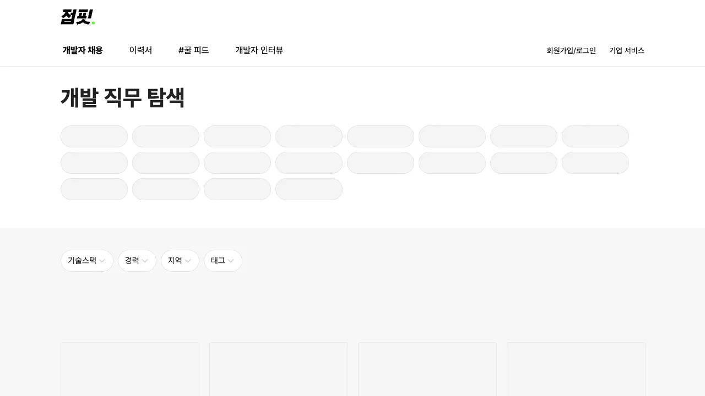
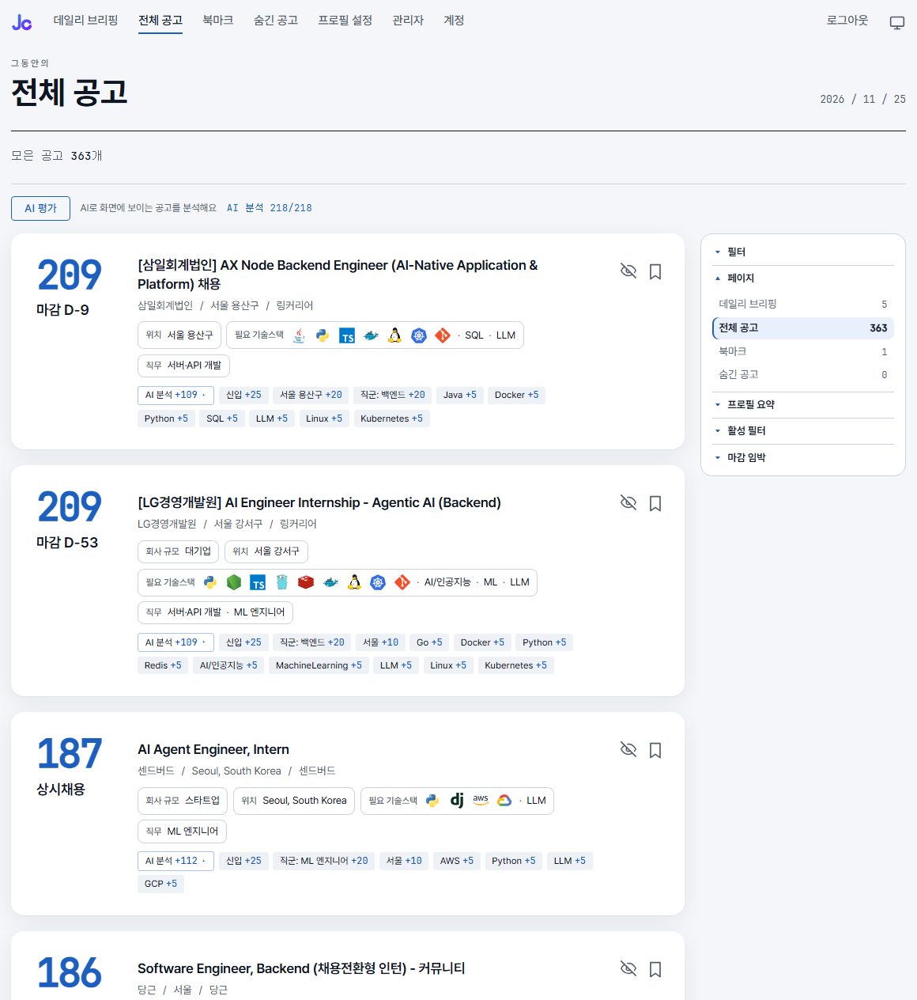

중소기업·스타트업도 본다면
신입 개발자를 뽑는 회사는 수백~수천 곳, 공고는 매일 바뀝니다
채용 포털은 수십 개
대기업·중견 공채
자소설
캐치
잡다
링커리어
종합 포털
사람인
잡코리아
인크루트
잡플래닛
개발자 전문
점핏
랠릿
프로그래머스 커리어
스타트업
원티드
로켓펀치
데모데이
그리팅
빅테크 공고 모음
네카라쿠배
신입·인턴
슈퍼루키
외국계
피플앤잡
LinkedIn
Indeed Korea
경력직 스카우트
리멤버 커리어
공공·지역
고용24
서울일자리포털
잡아바

점핏 공고 목록
한 곳만 쓰면 놓치는 공고가 생깁니다
매주 해야 하는 일
각 포털 로그인
개발 직군 선택
필터 적용
공고 하나씩 읽기
Notion에 따로 정리
제목은 신입, 본문은 경력
순위 매기기 · 마감일 관리까지
Jobcron

8개 포털 + 기업 채용 페이지 수집
중복 제거
학력·경력·지역·기피 조건으로 자동 필터
자유 조건 AI 평가 · 순위
jobcron.app
Jobcron 라이브 데모
목록
jobcron.app 열기
문제 소개: 제목에는 "신입"이 있지만 본문 자격 요건은 신입에게 맞지 않는 공고
네카라쿠배
점핏
랠릿
링커리어
자소설닷컴
슈퍼루키
취업 준비를 해 본 분 질문
채용 공고를 찾을 때 불편했던 점 질문
데모 참여자 모집 (참여자에게 초코파이 한 상자 깜짝 선물)
시작 설정 양식을 함께 작성
jobcron.app
전체 공고에서 재평가 누르기
데모 공고 (점핏)
평가 근거 문장 보여 주기
설정 페이지와 이메일 알림 옵션 보여 주기
피드백 요청 (16기 전체 소통방 글)
피드백 양식
질문 받기